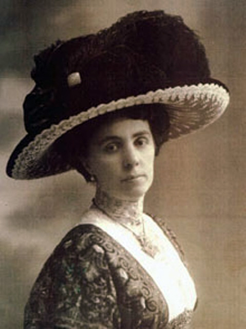
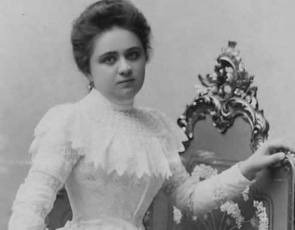
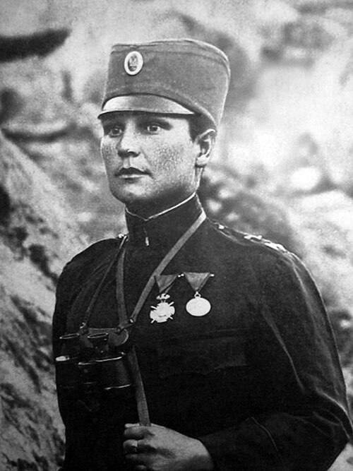
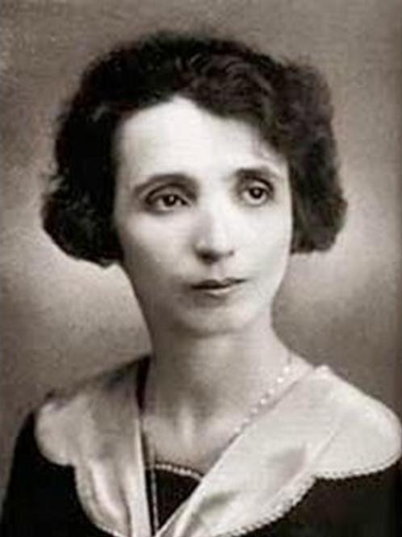
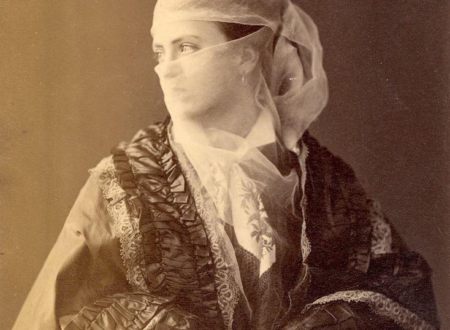
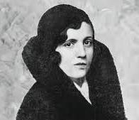
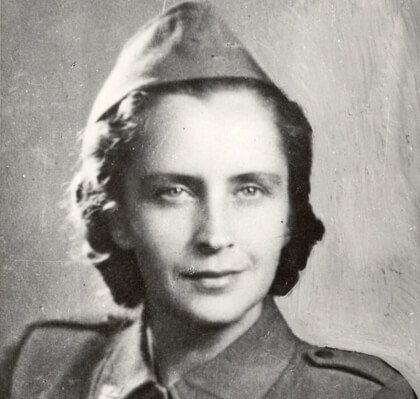
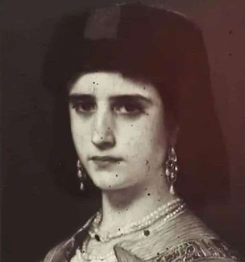
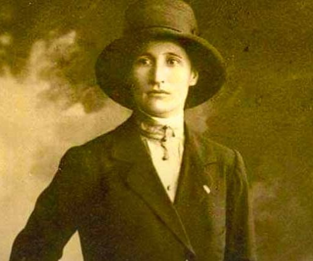
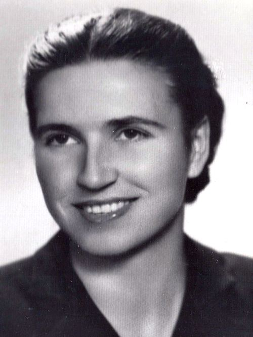

<!DOCTYPE html>
<html lang="en">
<head>
  <meta charset="UTF-8" />
  <meta http-equiv="X-UA-Compatible" content="IE=edge" />
  <meta name="viewport" content="width=device-width, initial-scale=1.0" />
  <title>IWD 2026</title>
  <!--Always load the CSS file bfore JS-->
  <link rel="stylesheet" href="leaflet\leaflet.css" />
  <link rel="stylesheet" href="style.css" />
  <script src="leaflet\leaflet.js"></script>
</head>
<body>
  <!--Creating the map container and is always a <div>-->
	<div id="map"></div>

  <!--Script files goes at the bottom of the body section-->
	<script>
		var map = L.map('map', {
			center: [43.45, 17.53],
			zoom: 6,
		});

    // adding second basemap to map
    var Thunderforest_Pioneer = L.tileLayer('https://{s}.tile.thunderforest.com/pioneer/{z}/{x}/{y}{r}.png?apikey={apikey}', {
      attribution: '&copy; <a href="http://www.thunderforest.com/">Thunderforest</a>, &copy; <a href="https://www.openstreetmap.org/copyright">OpenStreetMap</a> contributors',
      apikey: '580d7760e4c9433fa158fa9d21b3f3be',
      maxZoom: 22
    });

    Thunderforest_Pioneer.addTo(map);

    // adding first basemap to map
    var Esri_WorldGrayCanvas = L.tileLayer('https://server.arcgisonline.com/ArcGIS/rest/services/Canvas/World_Light_Gray_Base/MapServer/tile/{z}/{y}/{x}', {
      attribution: 'Tiles &copy; Esri &mdash; Esri, DeLorme, NAVTEQ',
      maxZoom: 16
    });

    Esri_WorldGrayCanvas.addTo(map);

    // adding first basemap to map
    var CartoDB_Voyager = L.tileLayer('https://{s}.basemaps.cartocdn.com/rastertiles/voyager/{z}/{x}/{y}{r}.png', {
	attribution: '&copy; <a href="https://www.openstreetmap.org/copyright">OpenStreetMap</a> contributors &copy; <a href="https://carto.com/attributions">CARTO</a>',
	subdomains: 'abcd',
	maxZoom: 20
	});

    CartoDB_Voyager.addTo(map);

    //marker icon
    var idwIcon = L.icon({
    iconUrl: 'idw.png',
    iconSize:     [60, 60], // size of the icon
    popupAnchor:  [-50, -25] // point from which the popup should open relative to the iconAnchor
    });

    // adding markers, tooltips and pop up content
    //ivana brlic mazuranic marker
    var ivanaBrlicMazuranic = L.marker([45.26, 15.23], {icon: idwIcon});
		ivanaBrlicMazuranic.addTo(map);

    // Tooltip on hover/focus
    ivanaBrlicMazuranic.bindTooltip("Ivana Brlić-Mažuranić", {
      direction: "top",
      offset: [0, -10],
      sticky: true,      // keeps it near the cursor while hovering
      opacity: 0.9
    });

    // Popup content with image and text
    var popupContent = '<b>Ivana Brlić-Mažuranić</b>';
		popupContent += '<br>';
    popupContent += 'Writer, (1874–1938)';
    popupContent += '<br><br>';
		popupContent += '';
		popupContent += '<br>';
		popupContent += '<p><b>Ivana Brlić-Mažuranić</b> was a world-renowned Croatian writer, often celebrated as the "Croatian Andersen" and the "Croatian Tolkien" for her mastery of childrens literature and fantasy. She remains one of Croatia’s most significant literary figures, known for blending Slavic mythology with universal moral lessons. </p>';

    ivanaBrlicMazuranic.bindPopup(popupContent);

    //marija juric zagorka marker
    var marijaJuricZagorka = L.marker([45.88, 16.41], {icon: idwIcon});
		marijaJuricZagorka.addTo(map);

    // Tooltip on hover/focus
    marijaJuricZagorka.bindTooltip("Marija Jurić Zagorka", {
      direction: "top",
      offset: [0, -10],
      sticky: true,      // keeps it near the cursor while hovering
      opacity: 0.9
    });

    var popupContent = '<b>Marija Jurić Zagorka</b>';
		popupContent += '<br>';
    popupContent += 'Journalist and writer, (1873–1957)';
    popupContent += '<b></b>';
		popupContent += '<br><br>';
		popupContent += '';
		popupContent += '<br>';
		popupContent += '<p><b>Marija Jurić</b>, known by her pen name <b>Zagorka</b>, was a Croatian journalist, writer and women\'s rights activist. She was the first female journalist in Croatia and is among the most read Croatian writers. </p>';

    marijaJuricZagorka.bindPopup(popupContent);

    //milunka savic marker
    var milunkaSavic = L.marker([43.42, 20.71], {icon: idwIcon});
		milunkaSavic.addTo(map);

    // Tooltip on hover/focus
    milunkaSavic.bindTooltip("Milunka Savić", {
      direction: "top",
      offset: [0, -10],
      sticky: true,      // keeps it near the cursor while hovering
      opacity: 0.9
    });

    // Popup content with image and text
    var popupContent = '<b>Milunka Savić</b>';
		popupContent += '<br>';
    popupContent += 'Military personnel, (1890–1973)';
    popupContent += '<br><br>';
		popupContent += '';
		popupContent += '<br>';
		popupContent += '<p><b>Milunka Savić</b> was a Serbian war heroine who fought in the Balkan Wars and in World War I. She is the most-decorated female combatant in the history of human warfare. She was wounded in battle nine times, and because of her immense courage and leadership, the French called her the "Serbian Joan of Arc". </p>';

    milunkaSavic.bindPopup(popupContent);

    //draga ljocic marker
    var dragaLjocic = L.marker([44.75, 19.69], {icon: idwIcon});
		dragaLjocic.addTo(map);

    // Tooltip on hover/focus
    dragaLjocic.bindTooltip("Draga Ljočić", {
      direction: "top",
      offset: [0, -10],
      sticky: true,      // keeps it near the cursor while hovering
      opacity: 0.9
    });

    // Popup content with image and text
    var popupContent = '<b>Draga Ljočić</b>';
		popupContent += '<br>';
    popupContent += 'Physician, (1855–1926)';
    popupContent += '<br><br>';
		popupContent += '';
		popupContent += '<br>';
		popupContent += '<p><b>Draga Ljočić</b> was a Serbian physician and feminist. She became the first Serbian woman to be accepted at the University of Zürich in Switzerland. She worked as a medical assistant in the army and became the first Serbian female doctor in medicine.</p>';

    dragaLjocic.bindPopup(popupContent);

    //ksenija atansijevic marker
    var ksenijaAtansijevic = L.marker([44.81, 20.46], {icon: idwIcon});
		ksenijaAtansijevic.addTo(map);

    // Tooltip on hover/focus
    ksenijaAtansijevic.bindTooltip("Ksenija Atansijević", {
      direction: "top",
      offset: [0, -10],
      sticky: true,      // keeps it near the cursor while hovering
      opacity: 0.9
    });

    // Popup content with image and text
    var popupContent = '<b>Ksenija Atansijević</b>';
		popupContent += '<br>';
    popupContent += 'Philosopher, (1894–1981)';
    popupContent += '<br><br>';
		popupContent += '';
		popupContent += '<br>';
		popupContent += '<p><b>Ksenija Atansijević</b> was the first recognised major female Serbian philosopher, and the first female professor of Belgrade University, where she graduated. She wrote about Giordano Bruno, ancient Greek philosophy and the history of Serbian philosophy,and translated important philosophical works into Serbian, including works by Aristotle, Plato, and Spinoza.</p>';

    ksenijaAtansijevic.bindPopup(popupContent);

    //Habiba Stočević Rizvanbegović marker
    var habibaStocevicRizvanbegovic = L.marker([43.08, 17.95], {icon: idwIcon});
		habibaStocevicRizvanbegovic.addTo(map);

    // Tooltip on hover/focus
    habibaStocevicRizvanbegovic.bindTooltip("Habiba Stočević Rizvanbegović", {
      direction: "top",
      offset: [0, -10],
      sticky: true,      // keeps it near the cursor while hovering
      opacity: 0.9
    });

    // Popup content with image and text
    var popupContent = '<b>Habiba Stočević Rizvanbegović</b>';
		popupContent += '<br>';
    popupContent += 'Poet, (1845–1890)';
    popupContent += '<br><br>';
		popupContent += '';
		popupContent += '<br>';
		popupContent += '<p><b>Habiba Stočević Rizvanbegović</b> was the daughter of an Ottoman pasha and the wife of an important Ottoman state official, originally from Mostar. She published a series of poems in the Ottoman language in Istanbul, especially in the avant-garde literary journal Servet-i Fünun (Wealth of Knowledge).</p>';

    habibaStocevicRizvanbegovic.bindPopup(popupContent);

    //Ševala Zildžić-Iblizović marker
    var sevalaZildzicIblizovic = L.marker([43.85, 18.41], {icon: idwIcon});
    sevalaZildzicIblizovic.addTo(map);

    // Tooltip on hover/focus
    sevalaZildzicIblizovic.bindTooltip("Ševala Zildžić-Iblizović", {
      direction: "top",
      offset: [0, -10],
      sticky: true,      // keeps it near the cursor while hovering
      opacity: 0.9
    });

    // Popup content with image and text
    var popupContent = '<b>Ševala Zildžić-Iblizović</b>';
		popupContent += '<br>';
    popupContent += 'Doctor, (1903-1978)';
    popupContent += '<br><br>';
		popupContent += '';
		popupContent += '<br>';
		popupContent += '<p><b>Ševala Zildžić-Iblizović</b> was the first female Bosniak doctor in the former Yugoslavia. A specialist in gynaecology and paediatrics who worked tirelessly to empower women and serve their community.</p>';

    sevalaZildzicIblizovic.bindPopup(popupContent);

    //Franja Bojc Bidovec marker
    var franjaBojcBidovec = L.marker([45.72, 14.74], {icon: idwIcon});
    franjaBojcBidovec.addTo(map);

    // Tooltip on hover/focus
    franjaBojcBidovec.bindTooltip("Franja Bojc Bidovec", {
      direction: "top",
      offset: [0, -10],
      sticky: true,      // keeps it near the cursor while hovering
      opacity: 0.9
    });

    // Popup content with image and text
    var popupContent = '<b>Franja Bojc Bidovec</b>';
		popupContent += '<br>';
    popupContent += 'Physician and resistance fighter, (1913-1985)';
    popupContent += '<br><br>';
		popupContent += '';
		popupContent += '<br>';
		popupContent += '<p><b>Franja Bojc Bidovec</b> founder of the Franja Partisan Hospital, a secret WWII hospital in Slovenia (then part of Yugoslavia) which remained undiscovered by the Nazis despite several attempts to find it. Before the war, she had to face many challenges that brought her to her decision to become a doctor.</p>';

    franjaBojcBidovec.bindPopup(popupContent);

    //jelena vickovic marker 
    var jelenaVickovic = L.marker([42.43, 18.77], {icon: idwIcon});
    jelenaVickovic.addTo(map);

    // Tooltip on hover/focus
    jelenaVickovic.bindTooltip("Jelena Vicković", {
      direction: "top",
      offset: [0, -10],
      sticky: true,      // keeps it near the cursor while hovering
      opacity: 0.9
    });

    // Popup content with image and text
    var popupContent = '<b>Jelena Vicković</b>';
		popupContent += '<br>';
    popupContent += 'Educator, (1849–1908)';
    popupContent += '<br><br>';
		popupContent += '';
		popupContent += '<br>';
		popupContent += '<p><b>Jelena Vicković</b> was a Montenegrin pioneer educator, educational reformer and women\'s rights activist. She was the first professional female school teacher in Montenegro, and founded the first school for girls in Montenegro. She is responsible for the literacy of hundreds of girls and women in Montenegro.</p>';

    jelenaVickovic.bindPopup(popupContent);

    //divna vekovic marker 
    var divnaVekovic = L.marker([42.83, 19.84], {icon: idwIcon});
    divnaVekovic.addTo(map);

    // Tooltip on hover/focus
    divnaVekovic.bindTooltip("Divna Veković", {
      direction: "top",
      offset: [0, -10],
      sticky: true,      // keeps it near the cursor while hovering
      opacity: 0.9
    });

    // Popup content with image and text
    var popupContent = '<b>Divna Veković</b>';
		popupContent += '<br>';
    popupContent += 'Doctor, (1886–1944)';
    popupContent += '<br><br>';
		popupContent += '';
		popupContent += '<br>';
		popupContent += '<p><b>Divna Veković</b> was the first female medical doctor in Montenegro, the first woman dentist, and the first to gain a doctoral degree. She was a physician at the Salonika front during World War I. She was also a humanitarian and a literary translator.</p>';

    divnaVekovic.bindPopup(popupContent);

    //vera aceva marker
    var veraAceva = L.marker([41.38, 21.63], {icon: idwIcon});
    veraAceva.addTo(map); 

    // Tooltip on hover/focus
    veraAceva.bindTooltip("Vera Aceva", {
      direction: "top",
      offset: [0, -10],
      sticky: true,      // keeps it near the cursor while hovering
      opacity: 0.9
    });

    // Popup content with image and text
    var popupContent = '<b>Vera Aceva</b>';
		popupContent += '<br>';
    popupContent += 'Politician and national hero, (1919-2006)';
    popupContent += '<br><br>';
		popupContent += '';
		popupContent += '<br>';
		popupContent += '<p><b>Vera Aceva</b> was a Macedonian communist, participant in the World War II in Yugoslavia and a national hero of former Yugoslavia. She was the first woman mayor of Skopje.Vera was well versed with the need for an adequate social policy promoting the position of women in society. </p>';

    veraAceva.bindPopup(popupContent);

    //basemaps control
    var basemaps = {
      "Thunderforest Pioneer": Thunderforest_Pioneer,
      "Esri World Gray Canvas": Esri_WorldGrayCanvas,
      "CartoDB Voyager": CartoDB_Voyager
		};

		L.control.layers(basemaps).addTo(map);

    //adding a scale bar to the map
		var scale = L.control.scale();
		scale.addTo(map);

		L.control.scale({ position: 'bottomleft' });

  </script>
</body>

</html>


